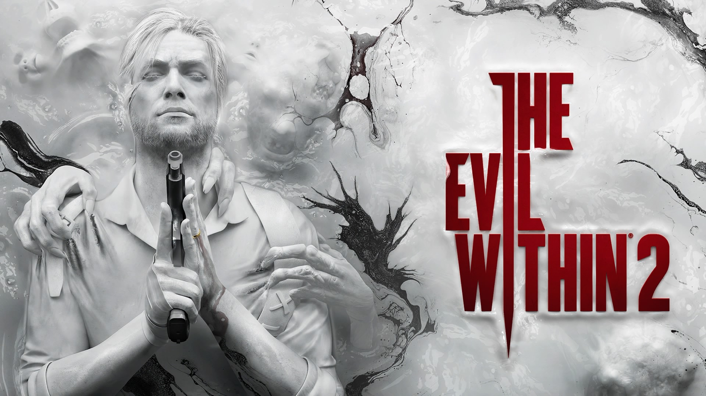

-


-
 Usuario AnonimoIniciar Sesion|Crear cuenta
Usuario AnonimoIniciar Sesion|Crear cuenta
LOS JUEGOS
IMPRESCINDIBLES
DE TERROR PS4
EL TERROR FORMA PARTE
ESENCIAL DE PS4
a lo largo del los años
PS4 ha recibido
videojuegos muy buenos
hemos conocido terror que nace de la
indefensión
absoluta como
Amnesia,SOMA...etc
Tampoco se quedan
atrás los juegos míticos como
Until Dawn,SilentHills,
Y tb los más
impactantes como PT,y Alien Isolation
Resident Evil 7
The-evil-Within
.jpg)
P.T.
.jpg)
Five Nights at Freddy's
.jpg)
Outlast
.jpg)
Alien: Isolation
LAS NUEVAS CARAS DEL TERROR EN ESTE 2018

Los madrileños de Protocol Games quieren homenajear a los clásicos de survival horror.
En el tendremos que averiguar que pasa en una mansión maldita
estaremos rodeados de peligros, sustos y momentos de tensión si nos mata o matan...
será de forma permanente suerte que hay 16 personajes pero que pasa sino sobrevive ninguno...
Tras varias cancelaciones por fin parece que va a salir es un juego inspirado en la demo de P.T nos trasladamos a una casa británica donde ha ocurrido un crimen horrible para conocer la verdad de lo ocurrido tenemos que explorar a fondo la casa y sobrevivir a la terrorífica entidad que nos acecha
Otro sucesor espiritual de P.T esta ambientado en los años 80 en una casa donde vivieron bastantes familias a lo largo de los siglos en esa casa y para ello debemos revivir los crímenes atroces vivividos en esa casa tiene multipes finales y una banda sonora que nos pondrá la piel de gallina y tb nos avisará de posibles peligros
Los chicos de Madmind Studio quieren mandarnos literalmente al infierno!! este juego nos pone en primera persona de un personaje que debe recuperar sus recuerdos para saber que esta pasando... el juego transcurre en abismos infernales debemos abrir paso en situaciones verdaderamente angustiosas y seres de pesadilla, el sigilo es el factor fundamental en este juego y la causa por la que estamos en este infierno es por culpa de...